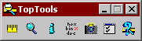
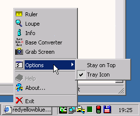
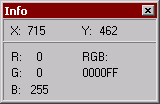
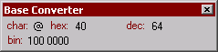
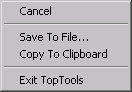
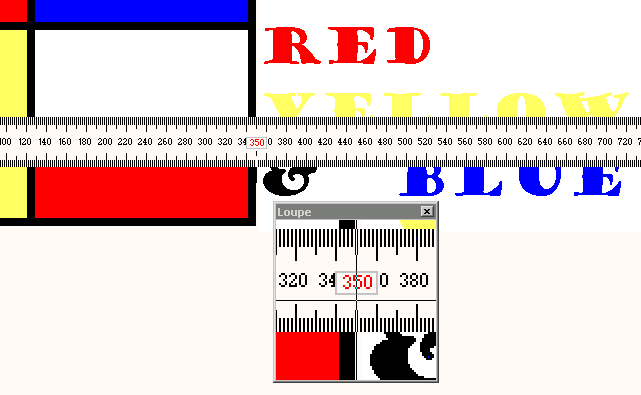

TopTools v2.43

Description
TopTools is a set of utilities meant to be helpful for web-designers and GUI-developers.
It features a screen-loupe and a screen-ruler seamlessly working together.
Additional are a base-converter, a color-picker and a screen-grabber.
The main window has a small footprint and optionally minimizes to the system-tray.
Introduction
I developed TopTools through the years as I was confronted with questions like:
- How can I get a closer look at this icon?
- How many pixels should I move this image to align with the rest?
- What is the height of this image?
- What is the RGB value of this pixel?
- How can I get this part of the screen on the clipboard?
- What was the ASCII value of this character again?
- What is 10110110 in hexadecimal?
- How can I quickly resize this window to 640x480
Features
General
All tool windows have a right-click popup menu, most of them are self-explanatory.
Loupe
The loupe displays an enlarged view of the area around the mousepointer, optionally a crosshair can be shown to indicate the exact hotspot location.
The zoom factor can be adjusted between 1 2 4 5 8 and 10 times either through the popup menu or by pressing the numeric '+' and '-' keys.
The loupeview can be frozen by hitting the spacebar.
Ruler
The ruler measures screen objects in pixel units.
It has a floating position indicator that follows the mousepointer.
The mousepointer has a line shape that flips when moved across the center of the ruler,
in this way both sides of the ruler can be used.
The ruler orientation can be toggled through the popup menu or by pressing the numeric '/' key.
It can be moved with the arrow keys or by dragging it with the mouse.

Info
The info window displays the color of the pixel under the mouse hotspot in both RGB and #webcolor notation.
Besides it shows the current mouseposition in screen coordinates.
New: By pressing 'Ctrl-C' the current color is copied to the clipboard in #RRGGBB format.

Base Converter
The base converter is a tiny calculator that converts between hexadecimal, decimal and binary. It also shows the ASCII value of printable characters.

Screen grabber
The screen grabber captures a portion of the screen. This snapshot can be copied to the clipboard or it can be saved to file in .jpg, .gif or .bmp format.
History
TopTools was born when I was using a screen-magnifier and a screen-ruler at the same time and was
annoyed by the fact that the two didn't cooperate:
The magnifier showed the portion of the screen that is left of and above the hotspot of the mouse pointer instead of a portion around the hotspot.
So when the magnifier was used together with the ruler, one would see either a close-up of the ruler, or a close-up of what was really to be measured, but with the ruler out of sight.
The ruler was actually quite good, but it came up with annoying shareware nag-boxes and I thought the price was a bit high for such a simple utility, so I decided to create my own.

Later I added some other little utilities, like the base-converter and the color-picker.
Screen capture was the latest addition to the tools.
The initial version was developed using Borland C++ 5.0 and the Object Windows Library.
Later versions were adapted to and maintained with Borland C++Builder 3, 4 and 5.
Version history
version 2.43:
- Fixed two bugs in the Screengrabber:
The snapshot was only saved when the selection was made from top-left to bottom-right, classic example of sloppy programming...
Selecting Cancel in the "Save to File" dialog now cancels the entire capture operation.
- The ruler orientation can now be toggled with the middle mouse button (provided this event is mapped to 'middle button' in the Mouse settings of the Control Panel).
version 2.42:
- Tray icon now gets restored after a restart of Windows Explorer.
version 2.41:
- When using the color-picker, pressing Ctrl-C now copies the current pixel color to the Windows clipboard in #RRGGBB webcolor format.
- It looks like I finally managed to get the stay-on-top feature stable...
- Need to rethink the trayicon double-click and minimize logic, suggestions are welcome!
version 2.40:
- Doubleclicking the tray-icon now restores the main-window.
- Loupe can now be zoomed in and out with the '+' and '-' keys on the numeric keypad.
- Removed the doubleclick action (toggle orientation) from the ruler, it interfered with the singleclick action (start a drag operation). Orientation can now be toggled with the '/' key on the numeric keypad.
- Fixed a bug in the loupe-magnification (this one was introduced with version 2.3).
- Removed the grid option from the loupe, it served no practical purpose.
- Fixed a bug in the binary field of the baseconverter that made the caret jump to the left with every digit entered.
- Revamped the About dialogbox, it now shows the actual build number and date. Also added a hyperlink to the TopTools homepage and changed the logo.
Todo
- Write a little help file
- Make loupe resizable
Known bugs
- Screengrabber doesn't save a file when in the "Save as..." dialog no filename extension is entered. You'll have to save a file by a name like "imagefile.gif" (.jpg .bmp) instead of plain "imagefile".
Comments, requests and bug reports:
info@toptools.org
|